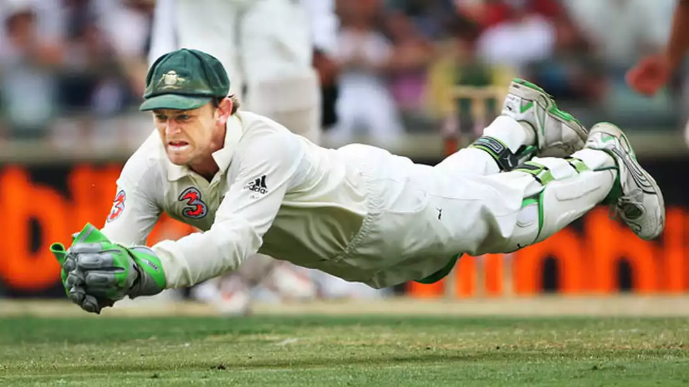
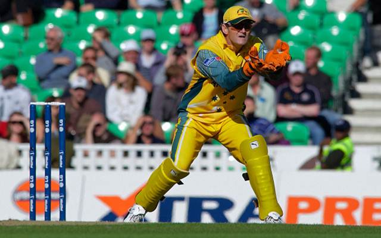
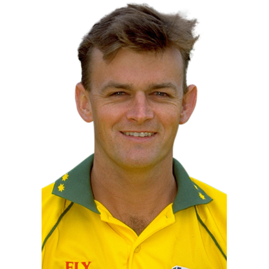
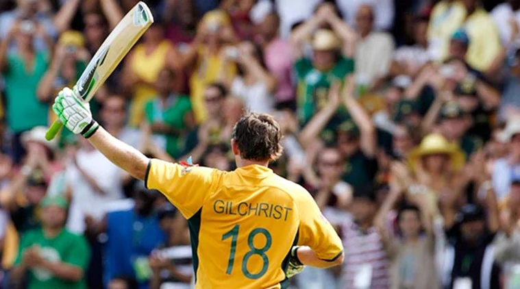
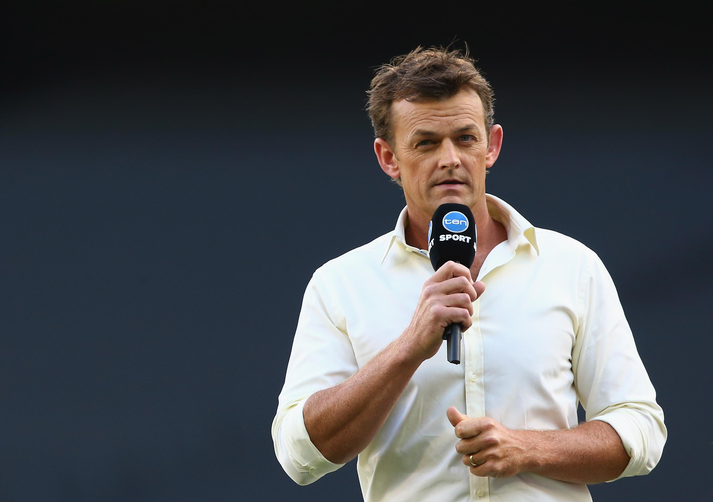
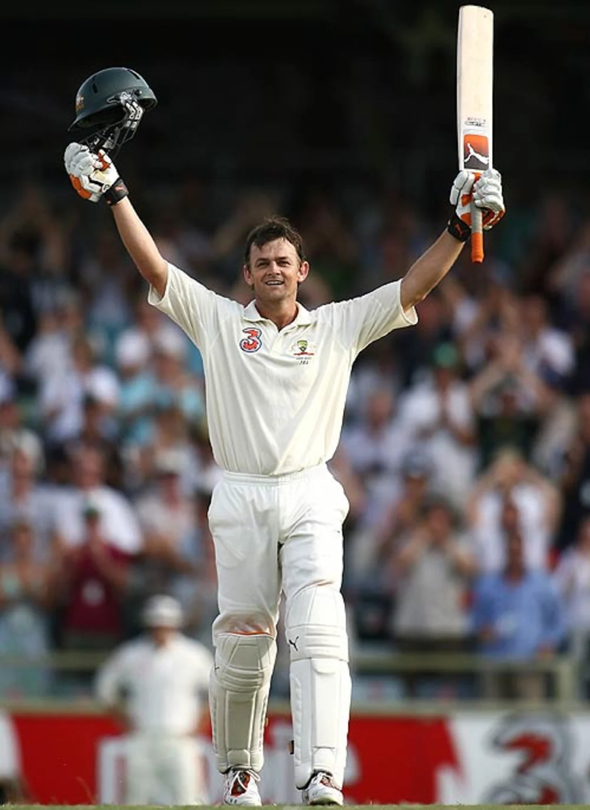

BIOGRAPHY OF ADAM GILCHRIST
PERSONAL DETAILS
Full Name: Adam Craig Gilchrist
Born: November 14, 1971 – Bellingen, New South Wales, Australia
Nickname: Gilly, Churchy


PROFESSIONAL DETAILS
Batting Style: Left-handed
Role: Wicket-keeper batsman
Teams: Australia, New South Wales, Western Australia, Deccan Chargers, Kings XI Punjab


Career Highlights
Widely regarded as one of the greatest wicket-keeper batsmen in cricket history
Revolutionized the role of wicket-keeper with aggressive batting style
Played 96 Tests, scoring 5,570 runs at an average of 47.60, with 17 centuries
In ODIs, scored 9,619 runs in 287 matches with 16 centuries
Held the record for most dismissals by a wicketkeeper in Tests (416) and ODIs (472) during his career
Played key roles in three World Cup wins (1999, 2003, 2007)
Scored a blistering 149 (104 balls) in the 2007 World Cup final
Known for his sportsmanship – famously walked even when not given out
Retired from international cricket in 2008.

POST-RETIREMENT
Became a respected commentator and cricket analyst.
Actively involved in charity work and cricket promotion worldwide.


More Info